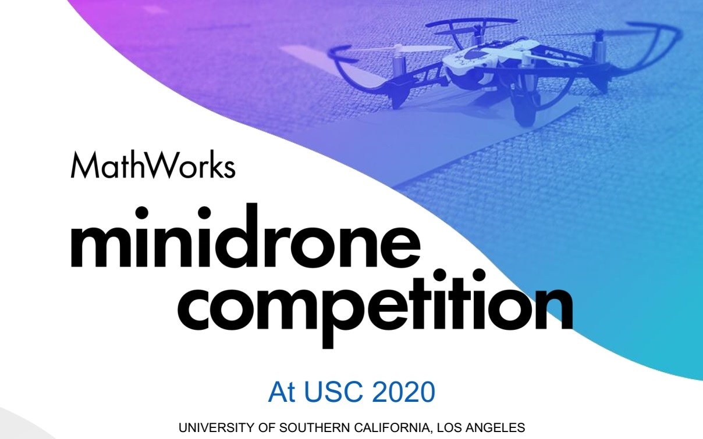

This is a competition organized by Mathworks that will be available for participants from USC and UCLA. If you are from a SoCal school and wish to participate in this competition, please reach out to the organizers (listed below). The competition will proceed in two rounds:
-
Round 1 opens: February 12, 2020. Round 1 closes: April 10, 2020.
Register here before April 1, 2020.
This is a Simulation round where you will design control algorithms for the drone in Simulink. -
Round 2: May 30, 2020.
Selected teams from Round 1 will deploy their algorithms on a Parrot minidrone and perform a live demonstration!

Fariba Ariaei
Email: lastname@usc.edu